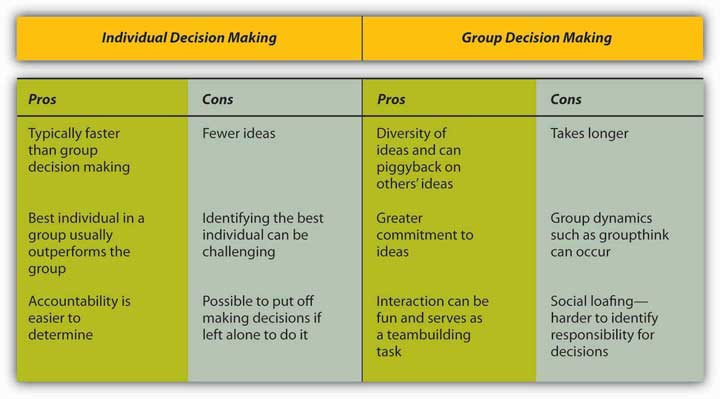

The answer to this question depends on several factors. Group decision making has the advantage of drawing from the experiences and perspectives of a larger number of individuals. Hence, a group may have the potential to be more creative and lead to more effective decisions. In fact, groups may sometimes achieve results beyond what they could have done as individuals. Groups may also make the task more enjoyable for the members. Finally, when the decision is made by a group rather than a single individual, implementation of the decision will be easier, because group members will be more invested in the decision. If the group is diverse, better decisions may be made, because different group members may have different ideas based on their backgrounds and experiences. Research shows that for top management teams, diverse groups that debate issues make decisions that are more comprehensive and better for the bottom line.Simons, T., Pelled, L. H., & Smith, K. A. (1999). Making use of difference: Diversity, debate, decision comprehensiveness in top management teams. Academy of Management Journal, 42, 662–673.
Despite its popularity within organizations, group decision making suffers from a number of disadvantages. We know that groups rarely outperform their best member.Miner, F. C. (1984). Group versus individual decision making: An investigation of performance measures, decision strategies, and process losses/gains. Organizational Behavior and Human Performance, 33, 112–124. While groups have the potential to arrive at an effective decision, they often suffer from process losses. For example, groups may suffer from coordination problems. Anyone who has worked with a team of individuals on a project can attest to the difficulty of coordinating members’ work or even coordinating everyone’s presence in a team meeting. Furthermore, groups can suffer from groupthink. Finally, group decision making takes more time compared to individual decision making, because all members need to discuss their thoughts regarding different alternatives.
Thus, whether an individual or a group decision is preferable will depend on the specifics of the situation. For example, if there is an emergency and a decision needs to be made quickly, individual decision making might be preferred. Individual decision making may also be appropriate if the individual in question has all the information needed to make the decision and if implementation problems are not expected. On the other hand, if one person does not have all the information and skills needed to make a decision, if implementing the decision will be difficult without the involvement of those who will be affected by the decision, and if time urgency is more modest, then decision making by a group may be more effective.
Figure 11.11 Advantages and Disadvantages of Different Levels of Decision Making
Figure 11.12
In January 1986, the space shuttle Challenger exploded 73 seconds after liftoff, killing all seven astronauts aboard. The decision to launch Challenger that day, despite problems with mechanical components of the vehicle and unfavorable weather conditions, is cited as an example of groupthink.Esser, J. K., & Lindoerfer, J. L. (1989). Groupthink and the space shuttle Challenger accident: Toward a quantitative case analysis. Journal of Behavioral Decision Making, 2, 167–177; Moorhead, G., Ference, R., & Neck, C. P. (1991). Group decision fiascoes continue: Space shuttle Challenger and a revised groupthink framework. Human Relations, 44, 539–550.
Have you ever been in a decision-making group that you felt was heading in the wrong direction but you didn’t speak up and say so? If so, you have already been a victim of groupthink. GroupthinkA tendency to avoid a critical evaluation of ideas the group favors. is a tendency to avoid a critical evaluation of ideas the group favors. Iriving Janis, author of a book called Victims of Groupthink, explained that groupthink is characterized by eight symptoms:Janis, I. L. (1972). Victims of groupthink. New York: Houghton Mifflin.
Groups should do the following:
Individuals should do the following:
Group leaders should do the following:
Sources: Adapted and expanded from Janis, I. L. (1972). Victims of groupthink. New York: Houghton Mifflin; Whyte, G. (1991). Decision failures: Why they occur and how to prevent them. Academy of Management Executive, 5, 23–31.
Nominal Group Technique (NGT)A technique designed to help with group decision making by ensuring that all members participate fully. was developed to help with group decision making by ensuring that all members participate fully. NGT is not a technique to be used routinely at all meetings. Rather, it is used to structure group meetings when members are grappling with problem solving or idea generation. It follows four steps.Delbecq, A. L., Van de Ven, A. H., & Gustafson, D. H. (1975). Group techniques for program planning: A guide to nominal group and Delphi processes. Glenview, IL: Scott Foresman. First, each member of the group begins by independently and silently writing down ideas. Second, the group goes in order around the room to gather all the ideas that were generated. This process continues until all the ideas are shared. Third, a discussion takes place around each idea, and members ask for and give clarification and make evaluative statements. Finally, group members vote for their favorite ideas by using ranking or rating techniques. Following the four-step NGT helps to ensure that all members participate fully, and it avoids group decision-making problems such as groupthink.
Delphi TechniqueA group process that utilizes written responses to a series of questionnaires instead of physically bringing individuals together to make a decision. is unique because it is a group process using written responses to a series of questionnaires instead of physically bringing individuals together to make a decision. The first questionnaire asks individuals to respond to a broad question such as stating the problem, outlining objectives, or proposing solutions. Each subsequent questionnaire is built from the information gathered in the previous one. The process ends when the group reaches a consensus. Facilitators can decide whether to keep responses anonymous. This process is often used to generate best practices from experts. For example, Purdue University Professor Michael Campion used this process when he was editor of the research journal Personnel Psychology and wanted to determine the qualities that distinguished a good research article. Using the Delphi technique, he was able to gather responses from hundreds of top researchers from around the world and distill them into a checklist of criteria that he could use to evaluate articles submitted to his journal, all without ever having to leave his office.Campion, M. A. (1993). Article review checklist: A criterion checklist for reviewing research articles in applied psychology. Personnel Psychology, 46, 705–718.
Majority ruleA decision-making rule in which each member of the group is given a single vote, and the option receiving the greatest number of votes is selected. refers to a decision-making rule in which each member of the group is given a single vote and the option receiving the greatest number of votes is selected. This technique has remained popular, perhaps due to its simplicity, speed, ease of use, and representational fairness. Research also supports majority rule as an effective decision-making technique.Hastie, R., & Kameda, T. (2005). The robust beauty of majority rules in group decisions. Psychological Review, 112, 494–508. However, those who did not vote in favor of the decision will be less likely to support it.
ConsensusA decision-making rule that groups may use when the goal is to gain support for an idea or plan of action. This decision-making rule is inclusive, participatory, cooperative, and democratic. is another decision-making rule that groups may use when the goal is to gain support for an idea or plan of action. While consensus tends to require more time, it may make sense when support is needed to enact the plan. The process works by discussing the issues at hand, generating a proposal, calling for consensus, and discussing any concerns. If concerns still exist, the proposal is modified to accommodate them. These steps are repeated until consensus is reached. Thus, this decision-making rule is inclusive, participatory, cooperative, and democratic. Research shows that consensus can lead to better accuracy,Roch, S. G. (2007). Why convene rater teams: An investigation of the benefits of anticipated discussion, consensus, and rater motivation. Organizational Behavior and Human Decision Processes, 104, 14–29. and it helps members feel greater satisfaction with decisions.Mohammed, S., & Ringseis, E. (2001). Cognitive diversity and consensus in group decision making: The role of inputs, processes, and outcomes. Organizational Behavior and Human Decision Processes, 85, 310–335. However, groups take longer with this approach, and if consensus cannot be reached, members tend to become frustrated.Peterson, R. (1999). Can you have too much of a good thing? The limits of voice for improving satisfaction with leaders. Personality and Social Psychology, 25, 313–324.
Doctors routinely perform postmortems to understand what went wrong with a patient who has died. The idea is for everyone to learn from the unfortunate outcome so that future patients will not meet a similar fate. But what if you could avoid a horrible outcome before it happened by proactively identifying project risks? Research has shown that the simple exercise of imagining what could go wrong with a given decision can increase people’s ability to correctly identify reasons for future successes or failures by 30%.Mitchell, D. J., Russo, J., & Pennington, N. (1989). Back to the future: Temporal perspective in the explanation of events. Journal of Behaviorial Decision Making, 2, 25–38. A “premortemA way to imagine what might go wrong and avoid it before spending a cent or having to change course along the way.” is a way to imagine what might go wrong and avoid it before spending a cent or having to change course along the way. Gary Klein, an expert on decision making in fast-paced, uncertain, complex, and critical environments, recommends that decision makers follow a five-step process to increase their chances of success.
This technique allows groups to truly delve into “what if” scenarios. For example, in a premortem session at a Fortune 500 company, an executive imagined that a potential billion-dollar environmental sustainability project might fail because the CEO had retired.
Sources: Breen, B. (2000, August). What’s your intuition? Fast Company, 290; Klein, G. (2007, September). Performing a project premortem. Harvard Business Review, 85, 18–19; Klein, G. (2003). The power of intuition: How to use your gut feelings to make better decisions at work. New York: Random House; Pliske, R., McCloskey, M., & Klein, G. (2001). Decision skills training: Facilitating learning from experience. In E. Salas & G. Klein (Eds.), Linking expertise and naturalistic decision making (pp. 37–53). Mahwah, NJ: Lawrence Erlbaum Associates.
Group Decision Support Systems (GDSS)Interactive computer-based systems that are able to combine communication and decision technologies to help groups make better decisions. are interactive computer-based systems that are able to combine communication and decision technologies to help groups make better decisions. Research shows that a GDSS can actually improve the output of groups’ collaborative work through higher information sharing.Lam, S. S. K., & Schaubroeck, J. (2000). Improving group decisions by better pooling information: A comparative advantage of group decision support systems. Journal of Applied Psychology, 85, 565–573. Organizations know that having effective knowledge management systemsSystems for managing knowledge in organizations, supporting creation, capture, storage, and dissemination of information. to share information is important, and their spending reflects this reality. Businesses invested $2.7 billion into new systems in 2002, and projections were for this number to double every 5 years. As the popularity of these systems grows, they risk becoming counterproductive. Humans can only process so many ideas and information at one time. As virtual meetings grow larger, it is reasonable to assume that information overload can occur and good ideas will fall through the cracks, essentially recreating a problem that the GDSS was intended to solve, which is to make sure every idea is heard. Another problem is the system possibly becoming too complicated. If the systems evolve to a point of uncomfortable complexity, it has recreated the problem. Those who understand the interface will control the narrative of the discussion, while those who are less savvy will only be along for the ride.Nunamaker, J. F., Jr., Dennis, A. R., Valacich, J. S., Vogel, D. R., & George, J. F. (1991, July). Electronic meetings to support group work. Communications of the ACM, 34(7), 40–61. Lastly, many of these programs fail to take into account the factor of human psychology. These systems could make employees more reluctant to share information because of lack of control, lack of immediate feedback, or the fear of online “flames.”
Decision treesDiagrams where answers to yes or no questions lead decision makers to address additional questions until they reach the end of the tree. are diagrams in which answers to yes or no questions lead decision makers to address additional questions until they reach the end of the tree. Decision trees are helpful in avoiding errors such as framing bias.Wright, G., & Goodwin, P. (2002). Eliminating a framing bias by using simple instructions to “think harder” and respondents with managerial experience: Comment on “breaking the frame.” Strategic Management Journal, 23, 1059–1067. Decision trees tend to be helpful in guiding the decision maker to a predetermined alternative and ensuring consistency of decision making—that is, every time certain conditions are present, the decision maker will follow one course of action as opposed to others if the decision is made using a decision tree.
Figure 11.14

Utilizing decision trees can improve investment decisions by optimizing them for maximum payoff. A decision tree consists of three types of nodes. Decision nodes are commonly represented by squares. Chance nodes are represented by circles. End nodes are represented by triangles.
There are trade-offs between making decisions alone and within a group. Groups have a greater diversity of experiences and ideas than individuals, but they also have potential process losses such as groupthink. Groupthink can be avoided by recognizing the eight symptoms discussed. Finally, there are a variety of tools and techniques available for helping to make more effective decisions in groups, including the nominal group technique, Delphi technique, majority rule, consensus, GDSS, and decision trees.


{kind=link}
{kind=link}